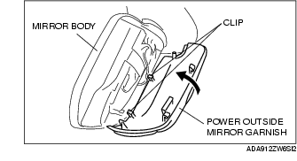

Outer mirror garnish installation
1. Position the power outer mirror garnish against the mirror body in the direction of the arrow shown in the figure, and insert the power outer mirror garnish clips (6 locations) into the mirror body.

2. Install the power outer mirror garnish so that there are no gaps around the component.